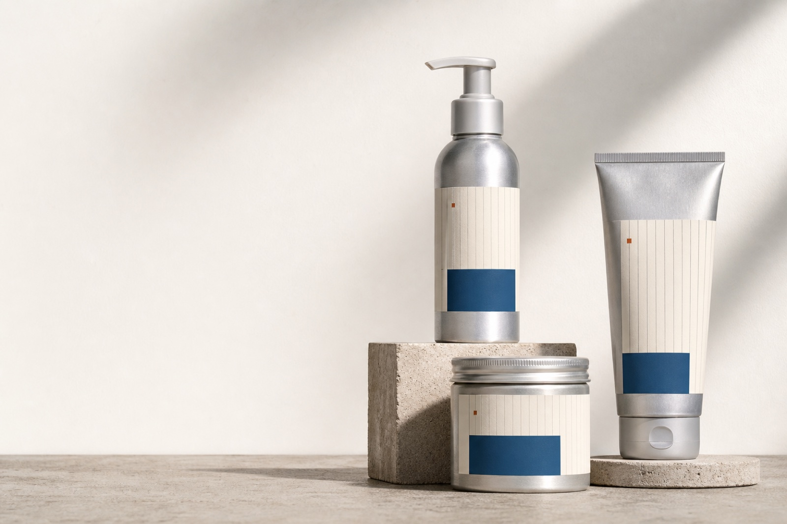
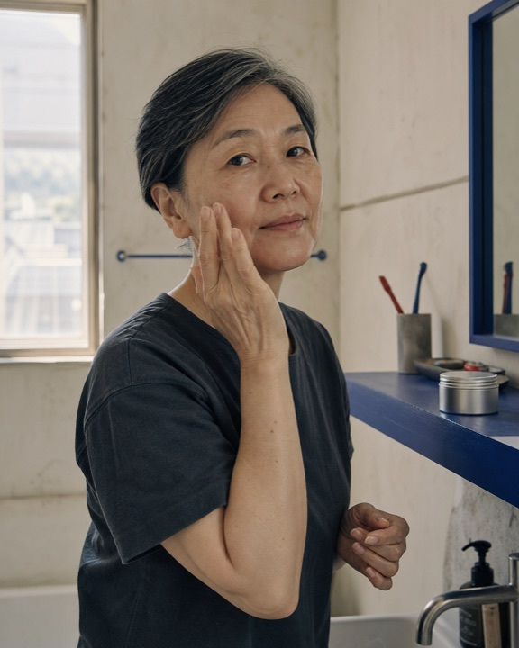
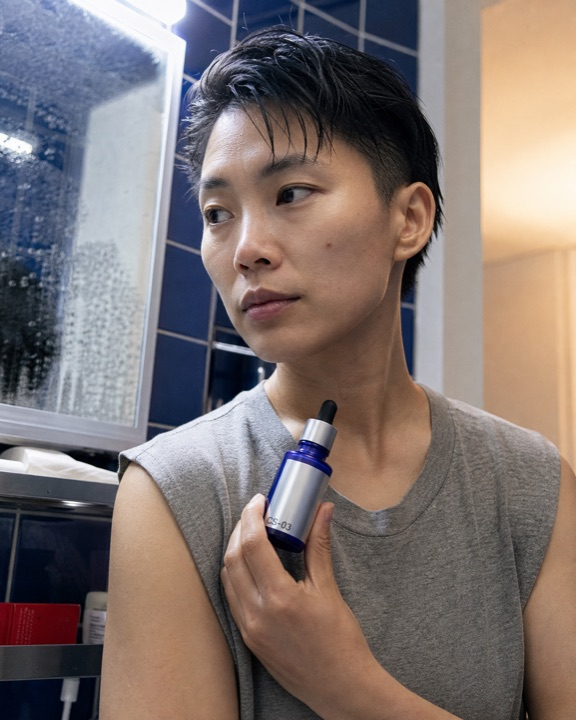
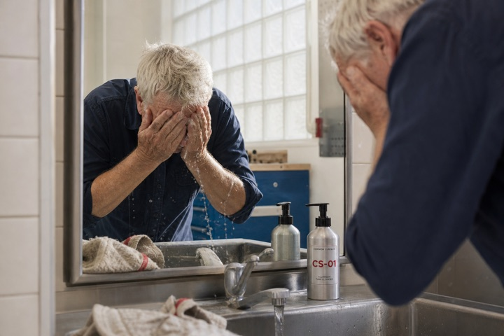
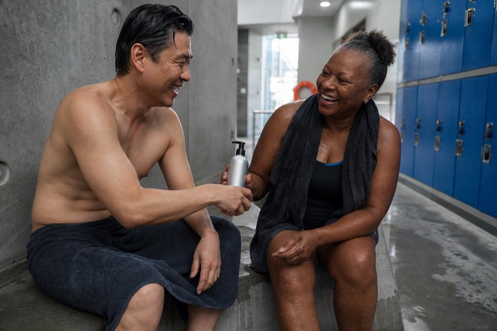

composition.common-surface.r3-hold-01 · 12 COL
같은 원칙,
다른 매체,
하나의 상태
정규화된 카탈로그와 동일한 컴포넌트로 일곱 매체의 기준선을 연결합니다.
R3-A / NORMALIZED BASELINE
change_state: not-activated
R3-B / HOLD / 01
EVENT-HOLD-01-CS03

Ⅱ
정규화 기준선 · 변경 전
R3-A / E2 TARGET
영향 제품없음
commit로컬 선택 가능
대안사용자 통제 유지
rollback변경 전 기준 보존
ID-MASTER-01 / primary
 ID-MASTER-02 / mono
ID-MASTER-03 / inverse
ID-MASTER-04 / small ≥24px
ID-MASTER-02 / mono
ID-MASTER-03 / inverse
ID-MASTER-04 / small ≥24px
TOKEN MIGRATION
--cs-signal → --cs-red
--cs-field-blue → --cs-blue
기존 이름은 호환 alias로만 한 revision 유지한다.
clear space심벌 폭 × 1/4모든 디지털 master의 단일 계약.
minimumsymbol 24px그 아래에서는 사용하지 않는다.
font dependency0 live text워드마크 글자는 path geometry.
mockup boundary변형 재유입 금지생성 이미지의 C형 표식은 master가 아니다.
전체 12개 제품을 표시합니다.
03 / RESERVE
LOCAL / NOT COMMERCE
Choose. Check. Keep Control.
시스템 제안, 사용자 초안, 명시적 commit, 로컬 확정 결과를 구분한다. 오류·보류·오래된 정보에서도 입력과 다음 행동을 보존한다.
선택·검증·로컬 확정
시작할 제품을 고르세요.
NO DRAFT
제품 사실·재고·가격·개인 적합성은 판단하지 않습니다.
제품을 먼저 선택해야 합니다.
기본 상태입니다. 사용자 초안은 아직 없습니다.

P-01 / AGE WITHOUT ERASURE
P-02 / CARE IN TRANSIT

P-03 / NO GENDERED ROUTINE

P-04 / REPEATED ACTION
P-05 / TEXTURE IS NOT A CLAIM
P-06 / NIGHT ROUTINE

P-07 / SHARED OBJECTS
35 매체 검사34 / 35WEB-02의 200%·screen reader 증거는 미측정. 나머지는 sample-frame/브라우저 증거.
P0 / P1재검증 중0.1.1은 독립 판정 STOP. 0.2.0 hard gate를 다시 검증한다.
사실 일치측정 중내부 7매체와 고객 Web의 동일 Binding revision을 비교한다.
사용자 평가대기사용자가 직접 보고 1–10과 근거를 기록한다.
Design PackIndustrial Swisspack:industrial-swiss@1.0.0grid, type, material, state 표현.
UX Presetdecision.reservedecision.reserve@0.1.0선택·commit·결과·복구 의미.
Product BindingCOMMON SURFACE catalogbinding.common-surface.catalog.r3@0.2.0-experiment제품·batch·claim·availability 사실.
Brand ExperienceRecovery is carebrand-experience.common-surface@0.1.0-experiment설명 우선, 불확실성 노출, quiet control.
CompositionR3 HOLD / 01composition.common-surface.r3-hold-01@0.2.0-experiment7개 매체와 고객 Web 카피의 결합.
HOLD / 01 영향 지도 15개 항목
| ID | 대상 | 행동 | 보존 | 증거 상태 |
|---|
| IMP-01 | Catalog / CS-03 | batch partial hold | stable ID·작업명 | E1 + DOM |
| IMP-02 | Claim ledger | 표현 철회 | identity label | text audit |
| IMP-03 | Identity | HOLD semantic 추가 | logo/raw token | token diff |
| IMP-04 | Reserve | commit 차단 | 입력·후보 | runtime trace |
| IMP-05 | Batch unknown | 거짓 해제 금지 | 입력 | state capture |
| IMP-06 | Brand voice | 차분한 상태 카피 | 비진단 | copy review |
| IMP-07 | Packaging | insert·격리 | 기존 물리 사실 | sample + gap |
| IMP-08 | Shop | shelf·tester route | 다른 제품 | sample + gap |
| IMP-09 | Merch | claim 미사용 preserve | garment identity | art inventory |
| IMP-10 | OOH | affected creative 교체 | generic identity | request sample |
| IMP-11 | Digital ads | pause·replace | generic creative | cache fixture |
| IMP-12 | Commerce web | alert·batch·recovery | 선택 context | runtime target |
| IMP-13 | Moodboard | incident guidance | source ledger | board diff |
| IMP-14 | Release | scoped rollback | audit history | QA fixture |
| IMP-15 | Governance | manifest·scorecard | R2 archive | audit report |
HOLD / 01 상태 계약
default, hold, affected, unknown, unaffected, invalid, loading, partial, stale, success, unavailable, alternative, retry, rollback.
영향 제품 CS-03의 정확한 합성 batch CS03-SYN-2608-H01은 판매 보류 상태이며 선택과 commit이 차단됩니다.
batch 미확인 또는 unknown 상태에서는 영향 없음이나 안전을 판정하지 않고 지원과 문의, 다른 제품 대안 경로를 제공합니다.
CLAIM-CS03-RECOVERY-01 표현 철회 상태는 모든 매체에 적용되며 영향받지 않은 제품은 정상 경로를 유지합니다.
release authority 없이 보류 해제 또는 rollback하지 않습니다. 합성 실험 시나리오이며 실제 리콜, 제품 위험 또는 안전 사건이 아닙니다.


 CS-03 / BARRIER
CS-03 / BARRIER